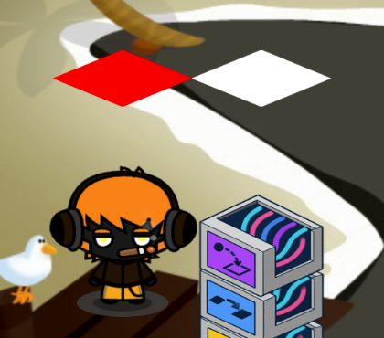
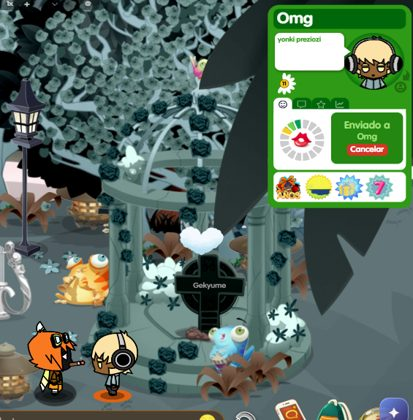
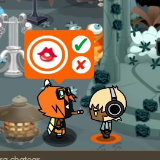

Nueva versión disponiblePulsa «Actualizar» para instalarla. Tus perfiles y ajustes no se tocan.
LAUNCHER ONLINE
Entra rápido. Juega sin ruido.
Perfiles separados, ping real al servidor, autoclick integrado y la Smart Bar con upper rápido.
ÚLTIMA CUENTASin perfil
Añade una cuenta para empezar
—
CUENTAS
Tus perfiles
Cada perfil tiene su propia sesión y su propia Smart Bar.
✦
Aún no tienes perfiles
Añade tu primera cuenta para empezar.
COMUNIDAD
Últimas noticias
Fuente oficial de BoomBang
AUTOMÁTICO
Subir datos
Dos cuentas en segundo plano: una envía y la otra acepta. No se abre ninguna ventana y sigue funcionando aunque apagues las pantallas.
¿Cómo funciona Subir datos?
✔ Antes de empezar solo la primera vez
Dos cuentas en Perfiles con el auto-login guardado. Ábrelas una vez desde el launcher e inicia sesión; después ya no hace falta volver a escribir nada.
La isla en Favoritas en las dos cuentas. El launcher siempre entra por Islas → Favoritas y comprueba que la isla es la que has escrito.
Permisos en la isla para las dos cuentas, o escribe abajo la contraseña del área (se guarda cifrada).
Una baldosa roja y, pegada a ella, una blanca dentro del área, sin nadie encima. El launcher las busca solo al entrar.
⚙ Cómo trabaja

1 · Cada una a su baldosaLa que recibe se pone en la roja y la que envía en la blanca.

2 · La que envíaFicha a la otra con un clic en la sombra de los pies, pulsa el dato y espera a que lo acepte.

3 · La que recibeEn cuanto le sale el cartel, pulsa el tick verde. Y vuelta a empezar.
⏱ El ritmo de cada dato
El juego necesita un tiempo entre regalo y regalo, y cada dato tiene el suyo:
Beso3,1 sFlor4,9 sCóctel8,8 s
Si un envío se queda en «Enviado a», se cancela, se vuelve a enviar y la espera de ese dato sube sola 0,3 s. Se guarda, así que la siguiente vez ya va bien. Puedes cambiarla a mano (mínimo 3100 ms).
☾ Mientras funciona
Puedes seguir usando el launcher y jugar con otras cuentas.
No abras esas dos cuentas en el juego: una cuenta no puede estar conectada dos veces.
Puedes apagar las pantallas. Solo no apagues ni suspendas el ordenador.
Si se cae la conexión o hay mantenimiento, vuelve solo a la isla y sigue.
Si sale un CAPTCHA, se abre una ventana para que lo resuelvas; luego vuelve a segundo plano.
? Si algo no va
«No veo la isla en Favoritas»: añádela a favoritas en esa cuenta y revisa que el nombre esté escrito igual.
«El área pide contraseña»: escríbela en «Contraseña del área» o da permisos en la isla a las dos cuentas.
«No encuentro la baldosa roja»: comprueba que la roja y la blanca están juntas y sin nadie encima. Si aun así no las encuentra, en «Más ajustes» puedes poner su posición a mano.
Algunos «cancelados» al principio con un dato nuevo son normales: es la espera ajustándose.
① Cuentas
Solo salen los perfiles con el auto-login guardado.
② Isla y área
③ Dato y ritmo
Más ajustes
Buscar las baldosas soloSi lo apagas, pon dónde están (x, y).
Datos0
Por minuto0
Cancelados0
Tiempo—
Envía—
Recibe—
NUEVO PERFIL
Añadir cuenta
Elige un nombre para identificar la cuenta en el launcher.
CONFIGURACIÓN
Ajustes del launcher
Auto-loginRellenar y entrar con las credenciales guardadas.
AutoclickFunciona en segundo plano mientras el launcher está abierto. Las teclas y la velocidad se cambian en el BB Hub → Autoclick.
Ocultar launcher al jugarDeja solo la ventana de BoomBang mientras juegas.
Recordar tamañoGuardar el tamaño de esta ventana.
Comprobar servidorActualizar el estado cada minuto.
Iniciar con WindowsAbre el launcher automáticamente al iniciar sesión.
Minimizar a la bandejaLa X oculta el launcher en la bandeja.
Animaciones siempre activasMantiene las animaciones del launcher y los efectos del juego aunque Windows tenga desactivados los «Efectos de animación».
CachéBorra los archivos temporales del launcher y del juego de todas tus cuentas. No cierra ninguna sesión. Útil si algo carga mal o va lento. (Dentro del juego también tienes «Borrar caché» en el BB Hub → Cliente.)
Buscar actualizaciones al abrirAvisa cuando haya una versión nueva en GitHub.